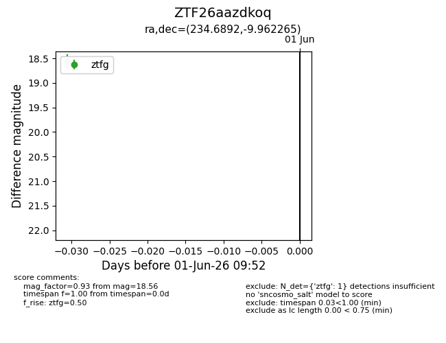
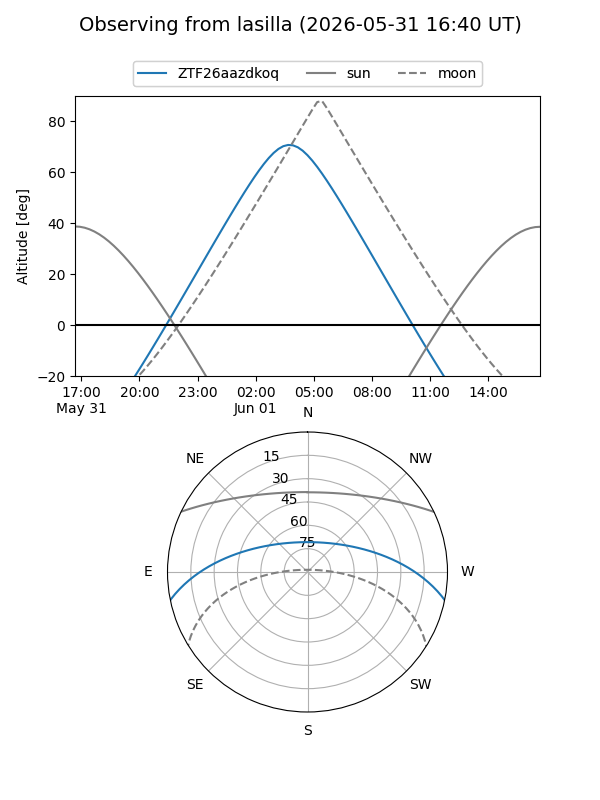
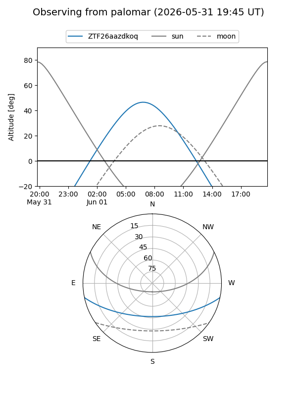

ZTF26aazdkoq
Target ZTF26aazdkoq at 2026-06-01 09:53
Aliases and brokers:
lsst-FINK: link
lsst-Lasair: link
lsst-ALeRCE: link
ztf-FINK: link
ztf-Lasair: link
ztf-ALeRCE: link
alt names
ZTF26aazdkoq (ztf,fink_ztf)
Coordinates:
equatorial (ra, dec) = 234.6892,-9.96226
equatorial (HMS+DMS) = 15:38:45.42,-09:57:44.15
galactic (l, b) = (356.2880,+35.04869)
Flags:
Photometry:
last ztfg=18.56
1 ztfg detections
Lightcurve

Visibility


Additional plots